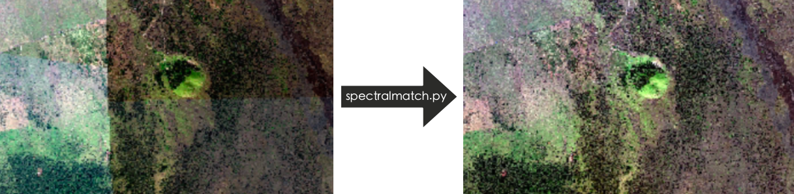
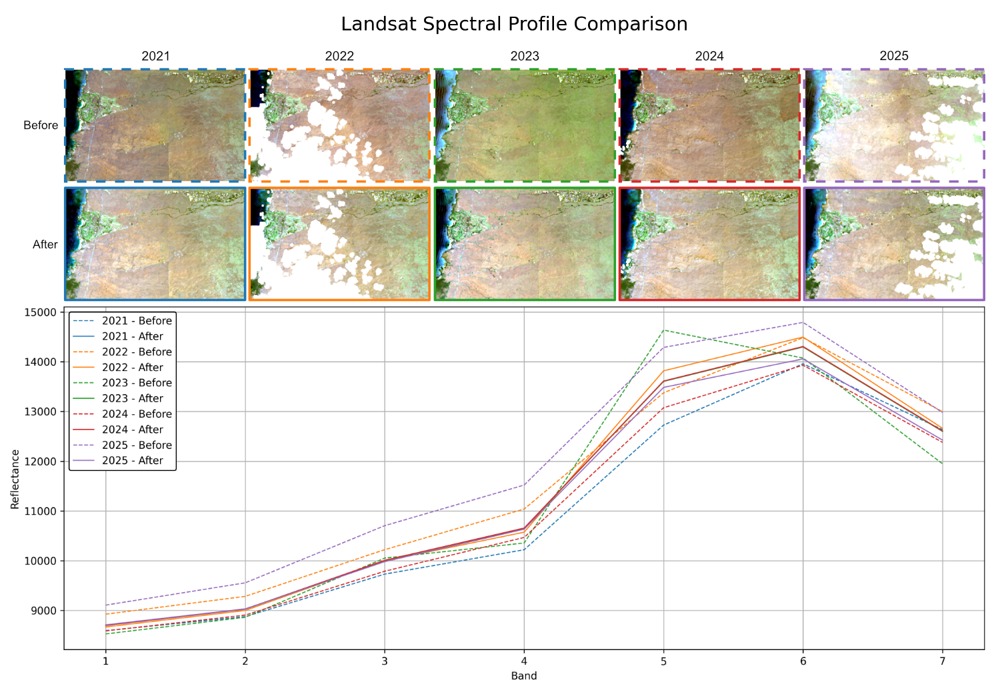

spectralmatch: Performant Relative Radiometric Normalization toolkit with Pseudo-Invariant Features, seamlines, and other utilities for mosaics and time series¶


Overview¶

spectralmatch provides a Python library, command line interface, and QGIS plugin with multiple algorythms to perform Relative Radiometric Normalization (RRN). It also includes utilities for generating seamlines, cloud masks, Pseudo-Invariant Features, statistics, preprocessing, and more.
Features¶
-
Automated, Efficient, and Scalable: Designed for large-scale workflows with no manual steps, leveraging multiprocessing and Cloud Optimized GeoTIFF support for fast, efficient processing across images, windows, and bands.
-
Resumable Processing: Save image stats and block maps for quicker reprocessing.
-
Integrated Seamline and Cloud Masking: Generate seamlines and detect clouds within the same workflow.
-
Specify Model Images Include all or specified images in the matching solution to bring all images to a central tendency or selected images spectral profile.
-
Consistent Multi-image Analysis: Performs minimal necessary adjustments to achieve inter-image consistency while preserving the original spectral characteristics.
-
Sensor and Unit Agnostic: Supports optical imagery from handheld cameras, drones, crewed aircraft, and satellites for reliable single sensor and multi-sensor analysis, while preserving spectral integrity across all pixel units—including negative values and reflectance.
-
Enhanced Imagery: Helpful when performing mosaics and time series analysis by blending large image collections and normalizing them over time, providing consistent, high-quality data for machine learning and other analytical tasks.
-
Open Source and Collaborative: Free under the MIT License with a modular design that supports community contributions and easy development of new features and workflows. Accessible through a python library, command line interface, and QGIS plugin.
Current Matching Algorithms¶
Global to local matching¶
This technique is derived from 'An auto-adapting global-to-local color balancing method for optical imagery mosaic' by Yu et al., 2017 (DOI: 10.1016/j.isprsjprs.2017.08.002). It is particularly useful for very high-resolution imagery (satellite or otherwise) and works in a two phase process. First, this method applies least squares regression to estimate scale and offset parameters that align the histograms of all images toward a shared spectral center. This is achieved by constructing a global model based on the overlapping areas of adjacent images, where the spectral relationships are defined. This global model ensures that each image conforms to a consistent radiometric baseline while preserving overall color fidelity. However, global correction alone cannot capture intra-image variability so a second local adjustment phase is performed. The overlap areas are divided into smaller blocks, and each block’s mean is used to fine-tune the color correction. This block-wise tuning helps maintain local contrast and reduces visible seams, resulting in seamless and spectrally consistent mosaics with minimal distortion.
 Shows the average spectral profile of two WorldView 3 images before and after global to local matching.
Assumptions¶
-
Consistent Spectral Profile: The true spectral response of overlapping areas remains the same throughout the images.
-
Least Squares Modeling: A least squares approach can effectively model and fit all images' spectral profiles.
-
Scale and Offset Adjustment: Applying scale and offset corrections can effectively harmonize images.
-
Minimized Color Differences: The best color correction is achieved when color differences are minimized.
-
Geometric Alignment: Images are assumed to be geometrically aligned with known relative positions via a geotransform. However, they only need to be roughly aligned as pixel co-registration is not required.
-
Global Consistency: Overlapping color differences are consistent across the entire image.
-
Local Adjustments: Block-level color differences result from the global application of adjustments.
Installation (Detailed methods)¶
Installation as a QGIS Plugin¶
Install the spectralmatch plugin in QGIS and use it in the Processing Toolbox.
Installation as a Python Library and CLI¶
Ensure you have the following system-level prerequisites: Python ≥ 3.10, pip, PROJ ≥ 9.3, and GDAL = 3.10.2. Use this command to install the library:
1 | |
Usage¶
Example scripts and sample data are provided to verify a successful installation and help you get started quickly in the repository at /docs/examples and downloadable here.
This is an example mosaic workflow using folders for each step:
1
2
3
4
5
6
7
8
9
10
11
12
13
14
15
16
17
18
19
20
21
22
23
24
25
26
27
28
29
30
31
32
33
34
35
36
37
38
39
working_directory = "/path/to/working/directory"
input_folder = os.path.join(working_directory, "Input")
global_folder = os.path.join(working_directory, "GlobalMatch")
local_folder = os.path.join(working_directory, "LocalMatch")
aligned_folder = os.path.join(working_directory, "Aligned")
clipped_folder = os.path.join(working_directory, "Clipped")
global_regression(
input_images=input_folder,
output_images=global_folder,
)
local_block_adjustment(
input_images=global_folder,
output_images=local_folder,
)
align_rasters(
input_images=local_folder,
output_images=aligned_folder,
tap=True,
)
voronoi_center_seamline(
input_images=aligned_folder,
output_mask=os.path.join(working_directory, "ImageMasks.gpkg"),
image_field_name="image",
)
mask_rasters(
input_images=aligned_folder,
output_images=clipped_folder,
vector_mask=("include", os.path.join(working_directory, "ImageMasks.gpkg"), "image"),
)
merge_rasters(
input_images=clipped_folder,
output_image_path=os.path.join(working_directory, "MergedImage.tif"),
)
¶
1 2 3 4 5 6 7 8 9 10 11 12 13 14 15 16 17 18 19 20 21 22 23 24 25 26 27 28 29 30 31 32 33 34 35 36 37 38 39 | |
Documentation¶
Documentation is available at spectralmatch.github.io/spectralmatch/.
Contributing Guide¶
Contributing Guide is available at spectralmatch.github.io/spectralmatch/contributing.
License¶
This project is licensed under the MIT License. See LICENSE for details.